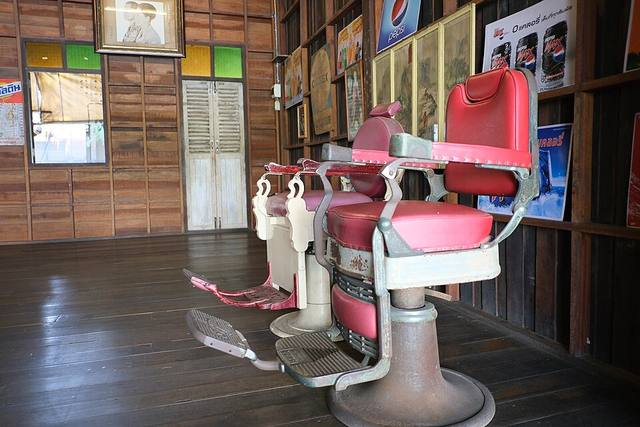
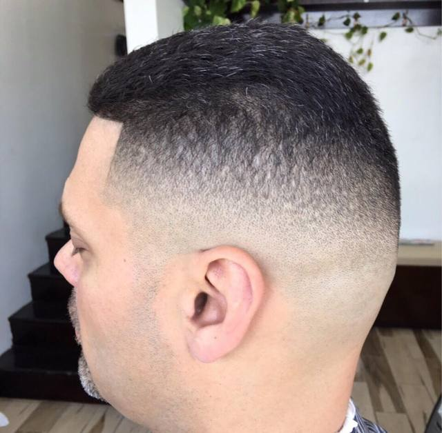
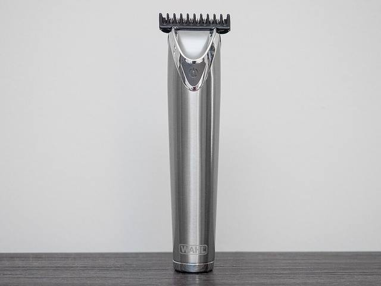
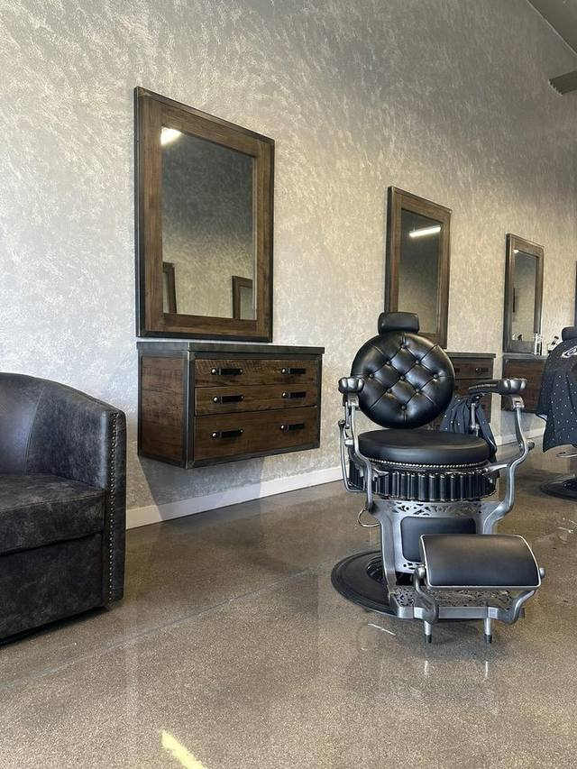

Batu 4, Port Dickson
- Lokasi
- Bangunan Arked MARA, Batu 4, Port Dickson
- Waktu
- 12 tgh – 8:30 mlm
Jumaat 3 ptg – 8:30 mlm
Sabtu tutup
Dari senarai Google — akan disahkan oleh pemilik

Gambar hiasan · PattayaPatrol · CC BY-SA 4.0Servis
Senarai servis penuh & harga akan disahkan oleh pemilik
Cawangan
Bilangan cawangan & pin peta akan disahkan oleh pemilik
Gaya
Gambar hiasan sahaja. Laman sebenar boleh paparkan hasil kerja kedai sendiri.

Truth678 · CC BY-SA 4.0
ajay_suresh · CC BY 2.0
Leverageroi · CC0Soalan lazim
Tidak — cawangan Lukut tutup setiap Sabtu, dan senarai Google untuk Batu 4 juga menunjukkan Sabtu tutup (akan disahkan oleh pemilik).
Akan disahkan oleh pemilik.
Harga akan disahkan oleh pemilik.